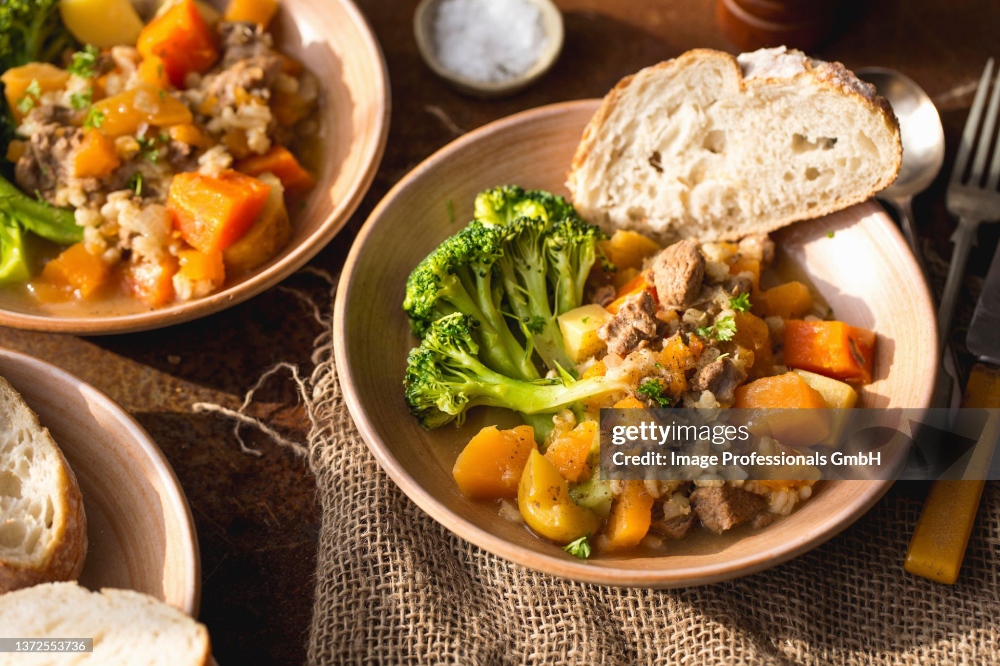

Home
Pressure-Cooked Lamb and Barley Stew

Description
A standard hearty meal involving lamb forequarter chops, pearl barley, and root vegetables.
Access to a pressure fryer and an induction stovetop is assumed. Serves 3 people.
Ingredients
- 900g lamb forequarter chops
- 1 tbsp olive oil
- 1 diced large brown onion
- 2 minced garlic cloves
- 2 medium-sized carrots, cut into ~2cm chunks
- 2 medium-sized potatoes, peeled and cut into ~3cm chunks
- 2 celery stalks, cut into ~1.5cm slices
- 1/2 cup of pearl barley, rinsed in cold water
- 3 cups (750ml) of low-sodium beef stock or lamb stock
- 1 tbsp Worcestershire sauce
- 1 tsp dried thyme or 4 sprigs of fresh thyme
- 1 bay leaf
- Some salt and black pepper
- (Optional) chopped fresh parsley, to serve
Steps
- Season the lamb chops with salt and pepper,
and brown them at medium to medium-high heat (~3-4 minutes each side, but times may vary).
Move them to a side plate once done.
- Saute the diced onion and garlic until translucent. Then, pour in a splash of stock to scrape
up the brown bits with a wooden spoon.
- Combine both the lamb and the onion plus garlic mix, stock included, into the pressure fryer pot.
Add the remaining stock, Worcestershire sauce, thyme, and bay leaf. Lock the lid and pressure cook
for 20 minutes, ideally on high.
- Once the above is done, quick-release the pressure and add the pearl barley, carrots, potatoes,
and celery. Relock the lid and pressure cook for another 10 minutes, again ideally on high.
- Once done, let the pressure fryer sit for 5 minutes as part of a natural release. Afterwards,
vent the remaining steam. Season with extra pepper and parsley, if desired.